Le lieu commun, compréhensible partout
Aperçu du lot complet, à essayer sur l'iPhone. Données figées le 4 novembre au soir, rien n'est publié.
Essayer sur le téléphoneAccueil · Cinéma · Agenda · Autour de moi
À essayer
- Toucher la capsule du lieu : Domicile et Travail sont là, sans passer par l'étoile.
- Choisir Elne, puis Arles-sur-Tech, puis Canet : la capsule, le Cinéma, l'Agenda et la carte suivent.
- Sur l'Agenda, glisser la carte : elle reste où tu l'as mise. Rechoisir le lieu l'y ramène.
- Sur l'Agenda, agrandir la carte : un doigt suffit, et la capsule compacte ouvre le même sélecteur.
Dans cet aperçu, seules ces quatre pages ont leurs données, et les réponses du serveur sont rejouées. Les courriels et téléphones d'organisateurs y sont masqués. Les autres rubriques ne se chargent pas.
La capsule du lieu reste à l'écran
Avant, le défilement vers « Cinéma » l'emportait. Elle reste maintenant à gauche, et les autres capsules défilent à côté.
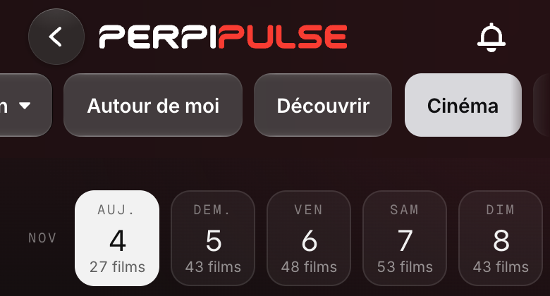
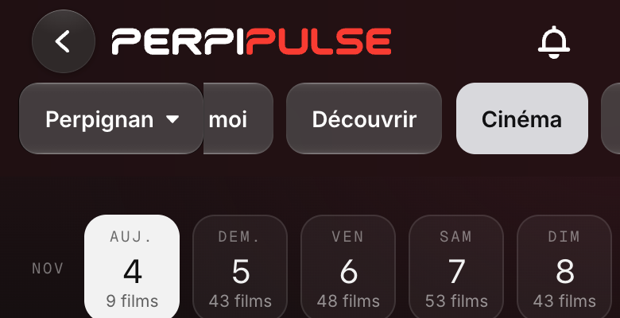
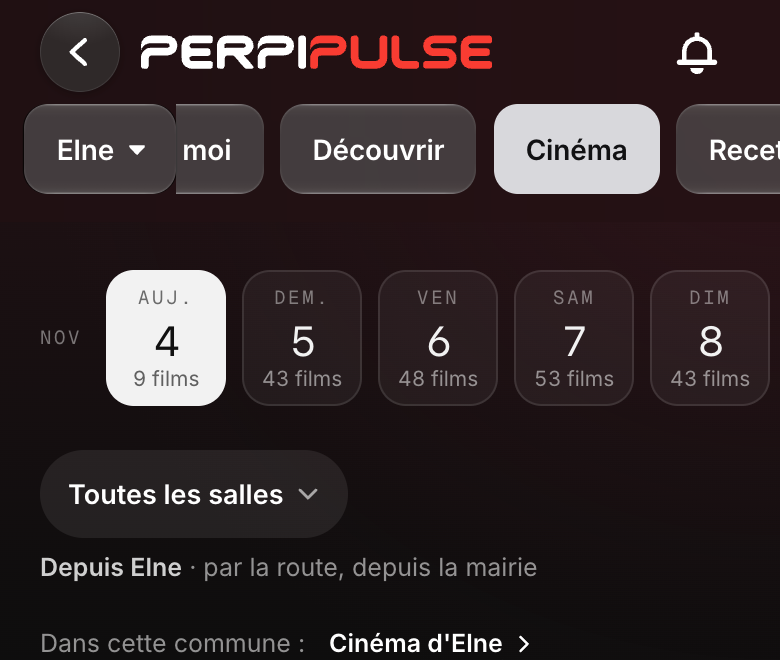

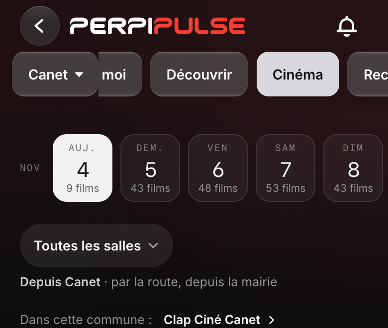
Domicile et Travail, à vue
Proposés quand ils sont absents, réglés sans toucher aux favoris ni à la ville par défaut. L'étoile ne sert plus qu'aux favoris.
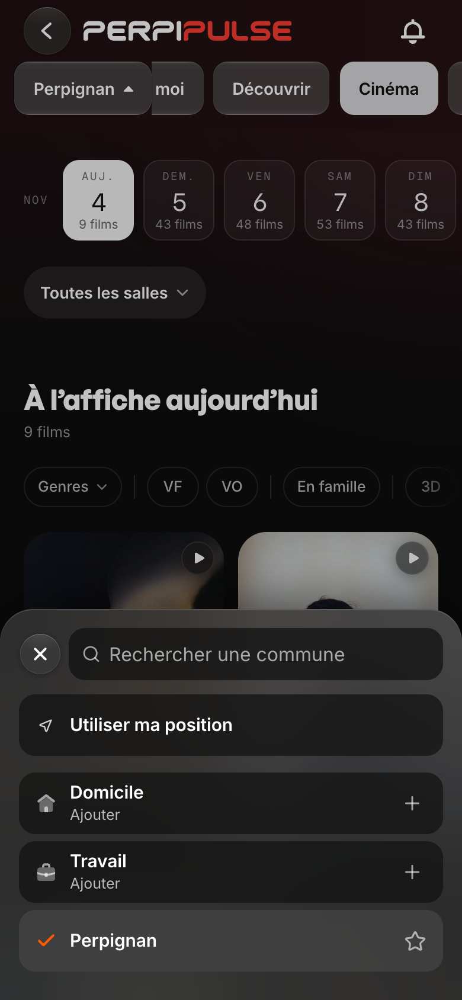
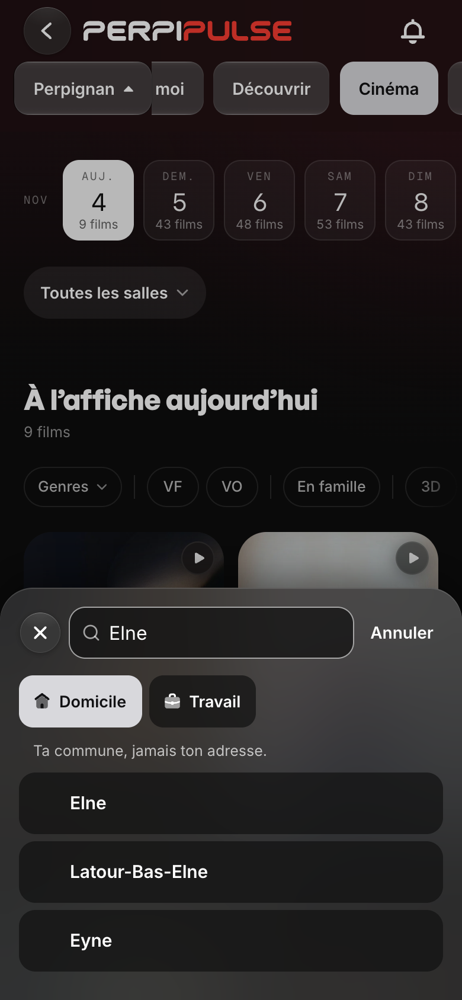

Un seul accès au lieu
Le Cinéma et l'Agenda n'ont plus de sélecteur à eux. Là où l'en-tête n'est pas visible, dans une fiche ou sur la carte en grand, une commande ouvre le même.
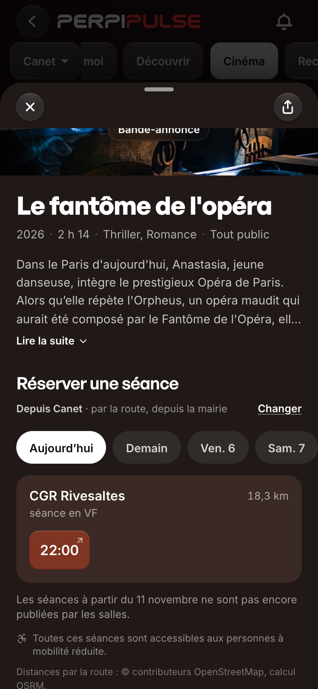
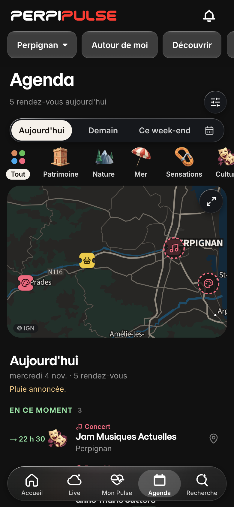
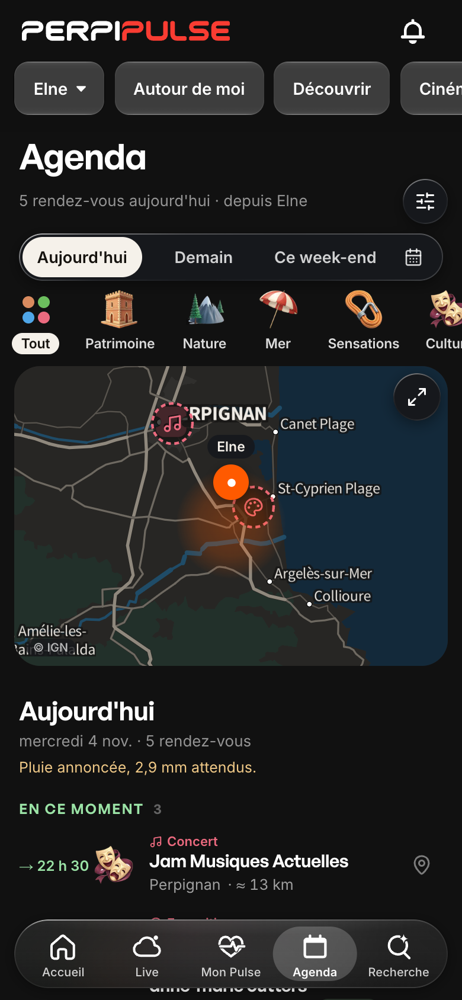
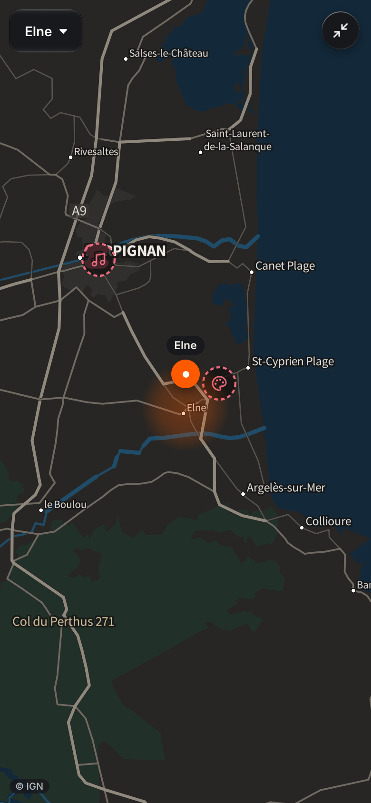
La position réelle, et le lieu regardé
Le point bleu est la position. Le lieu regardé est une zone orange, sans pointe : une commune n'est pas une adresse.

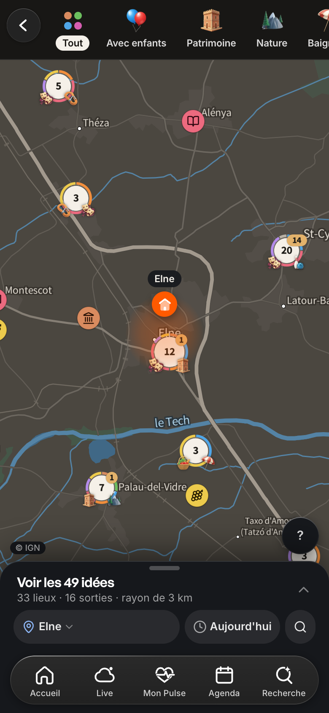
L'en-tête sans trait
Plus de trait ni d'ombre, sur toutes les pages. Le bord reste net, comme au Cinéma : c'est le point à regarder.
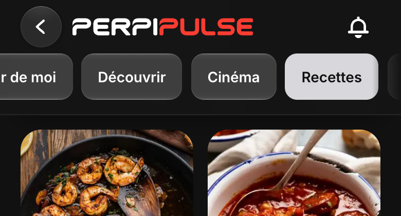
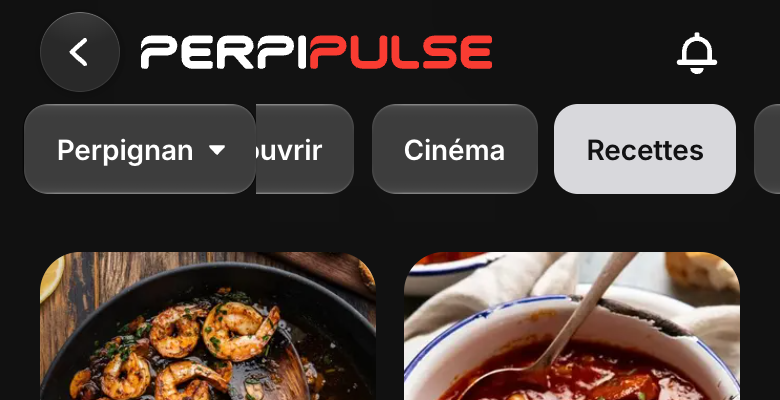
À 375 px, sans capsule coupée
À cette largeur, sous « Perpignan », aucune capsule ne dépasse à droite : rien n'indique que la rangée défile.
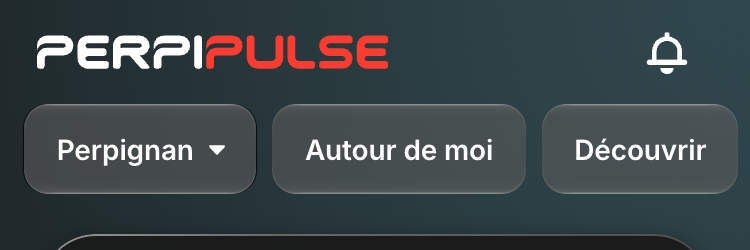